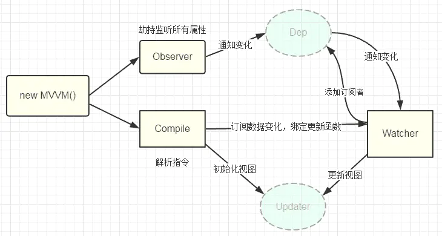

一、故事分享
🎯 今年是我做前端的第二年，由于种种原因，2022年我又踏上了求职的道路。虽然前方道路坎坷不平，但是打工人没什么不可以，要有不服输的精神！
这次要分享的是纯干货（笔记📒）其中许多问题及解析均来源于网络上各位前辈的帖子，我根据自己的情况整理了一下并不是刻意抄袭哦！
二、关于Vue
1. vue 的设计原则、优点
vue是一个渐进式前端框架，SPA单页面应用。
SPA单页面应用有个缺点：不利于SEO，首页加载过慢，不支持IE8
优点：
● 易用性：提供数据响应式，组件式开发，单页面路由，数据渲染与视图分开
● 灵活性：渐进式框架最大的优点就是灵活性
● 高效性：虚拟dom和diff算法
如何理解vue组件化？
（关键字：独立、可复用）
组件化开发可以大幅度提高开发效率、测试性、复用性
组件化开发高内聚低耦合，遵循单项数据流。还可以提高应用性能
组件分类：页面组件、业务组件、通用组件
常见的组件化技术：属性prop、自定义事件、插槽…(组件通讯、扩展)
// 组件化定义、优点、使用场景和注意事项等方面展开陈述，同时要强调vue中组件化的一些特点
// 组件定义
Vue.component('demo', {
template: '<div>this is a component</div>'
})
组件data为什么是个函数？
防止组件复用时数据相互影响
单项数据流、双向绑定
单向数据流：只允许父组件传递值给子组件，不能反向传递值。
双向数据绑定：在单向数据流的基础上通过自定义事件改变父组件中的数据值。
响应式原理：Object.defineProperty()数据劫持 + 发布订阅者模式
优点：
● 所有状态的改变可记录、可跟踪、源头易溯
● 数据操作更直观、容易理解、可维护性强
● 数据变化页面自动变化、修改数据时状态可预测
缺点：
● 页面渲染完成后，数据不能自动更新需要整合新数据和模版重新渲染
● 代码量^数据流转过程长
● 在处理交互较多（局部状态多）的场景时比较繁琐
v-model实际上就是$emit(‘input’) 与prop: value组合的语法糖
2. Vue2的响应式原理
vue初始化时会用Object.defineProperty()给data中每个属性（遍历+递归）添加 getter 和 setter 同时创建Dep和Watcher
进行依赖收集、派发更新。通过diff算法来对比新老vnode差异，通过patch及时更新DOM
为什么频繁的数据变化只会渲染1次？
● a. 检测到数据发生变化
● b. 开启一个队列
● c. 在同一事件循环中缓冲有所改变，如果同一个watcher(ID相同)被多次触发，只会被推入队列 1 次
执行顺序：update - queueWatcher - 维护观察队列(处理ID相同的watcher) - waiting标志位处理 - 处理$nextTick异步更新DOM
不优化：setter - Dep - watcher - update - run（不优化每个数据变化都会执行）
3. Vue2 Object.defineProperty() 缺陷
初始化时需要遍历对象所有 key，如果对象层次较深，性能不好
通知更新过程需要维护大量 dep 实例和 watcher 实例，额外占用内存较多
Object.defineProperty 无法监听到数组元素的变化，只能通过劫持重写数方法
动态新增，删除对象属性无法拦截，只能用特定 set/delete API 代替
不支持 Map、Set 等数据结构
● 无法监听数组。修改数组的索引和长度是无法被监控到的（数组的length初始化 => configurable: false），只能通过重写的方法来监听数组。（7种：push、shift、unshift、pop、reverse、sort、splice）
● 只能劫持对象属性，对于深层属性嵌套的对象，要劫持内部深层次的变化就需要深度递归/遍历（很大的性能消耗）。而Vue3的proxy可以劫持整个对象并返回一个新的对象（可以代理动态增加的属性值，还可以代理数组）
Vue2代码的优化方法：
a. 对象层级不要嵌套太多
b. 不需要响应式的不要放在data中，可以Object.freeze()冻结数据
4. Vue2的diff算法
数据变更触发页面重新渲染，会生成虚拟 DOM 并进行 patch
diff 算法是一种通过同层的树节点进行比较的高效算法，特点：
(1). 比较只会在同层级进行, 不会跨层级比较（只比对父节点相同的新旧节点）
(2). 在diff比较的过程中，循环从两边向中间收拢
总结策略：深度优先，同层比较
=> 找到相同但不需要移动的节点
=> 找到相同但需要移动的节点
=> 新建/删除节点
比较结果直接对真实的DOM修改Vue的patch是即时的，React是更新放入队列结果后集中处理
原理：当数据发生改变时，set方法会调用Dep.notify通知所有订阅者Watcher，订阅者就会调用patch给真实的DOM打补丁，更新相应的视图
对比 VUe3 diff算法：
● 事件缓存：将事件缓存(如: @click)，可以理解为变成静态的了
● 静态提升：第一次创建静态节点时保存，后续直接复用
● 添加静态标记：给节点添加静态标记，以优化 Diff 过程
编译阶段的优化，除了能更快的生成虚拟 DOM 以外，还使得 Diff 时可以跳过”永远不会变化的节点”
diff优化：
● Vue2 是全量 Diff，Vue3 是静态标记 + 非全量 Diff
● 使用最长递增子序列优化了对比流程
5. Vue2 Computed原理
computed 计算属性，有缓存，不支持异步。
其本质是一个惰性求值的观察者，内部通过this.dirty 标记计算属性，是否需要重新计算
6. Vue Watcher原理
watcher 监听，没有缓存，支持异步。监听的是已经在data 中定义的变量，当该变量变化时，会触发watch 中的方法。
更多的是观察可以监听某些数据并执行回调，需要深度缓存可以打开deep: true 会对对象的每项属性进行监听（不建议，可能会出现性能问题）
// 深度缓存可以打开deep: true
watch:{
msg:{
handler (newMsg,oldMsg){
console.log(newMsg);
},
immediate:true,
deep:true
}
}7. Vue2 nextTick原理
nextTick 是全局 vue 的函数，当数据更新了，在dom中渲染之后，自动调用该函数。
Promise - MutationObserver - SetImmediate - SetTimeOut
主要思路就是采用微任务优先的方式调用异步方法去执行 nextTick 包装的方法
使用场景：
● 在生命周期 created 函数进行的dom操作一定要放在 nextTick 回调中。原因是：在created 函数中dom还并未渲染出来，此时将dom操作的相关代码放入 nextTick 回调中与之对应的就是 mounted 函数，此时dom已经被渲染出来。
● 当数据发生变更后，想要立即操作新的视图。
● 当使用第三方插件时，想要在dom动态发生变化时重新应用插件。
原理：
Vue是异步执行dom更新的，一旦观察到数据变化，Vue就会开启一个队列，然后把在同一个事件循环 (event loop) 当中观察到数据变化的 watcher 推送进这个队列。
如果这个watcher被触发多次，只会被推送到队列一次。这种缓冲行为可以有效的去掉重复数据造成的不必要的计算和DOm操作。
而在下一个事件循环时，Vue会清空队列，并进行必要的DOM更新。
因此，在操作数据之后，并不会马上更新dom，而是要等异步队列被清除，下一个事件循环开始执行更新时才会对必要的dom进行更新。这时想要根据更新的 DOM 状态去做某些事情，就不好处理。
为了在数据变化之后等待 Vue 完成更新 DOM ，可以在数据变化之后立即使用Vue.nextTick(callback) 。这样回调函数在 DOM 更新完成后就会调用。
// 举例：
created(){
let _this = this;
_this.$nextTick(function(){ // 不使用this.$nextTick()方法会报错
_this.$refs.test.innerHTML="created中更改了页面dom内容"; // 更改DOM元素内容
});
},key的作用
key的唯一性可以被map数据结构充分利用
key是可以给每个vnode的唯一ID，依靠key diff操作可以更快速、准确，在对比中带key可以避免就地复用。
8. Vue-router路由
默认hash（浏览器环境）｜ abstract（nodejs环境）
hash 使用URL的 hash 值作为路由，支持所有浏览器除了HTML5 history API的浏览器
hash 会出现URL中，但不会被包含在 HTTP 请求中，对后端没有影响。因此改变 hash 不会重新加载页面
特点：兼容性好但是不美观
// 可以为 hash 的改变添加监听事件
window.addEventListener("hashchange", funcRef, false);
每一次改变 hash（window.location.hash），都会在浏览器的访问历史中增加一个记录。利用 hash 的以上特点，可以来实现前端路由“更新视图但不重新请求页面”的功能了
history 依赖 HTML5 history API【新增的 pushState() 和 replaceState() 方法】和服务器配置
特点：虽然美观，但是刷新会出现 404 需要后端进行配置
abstract 支持所有的js运行环境，如nodejs服务端。如果没有浏览器API会强制进入这个模式
VueRouter跳转
1）this.$router.push(页面路由)
传参有两种方式：
// 1、query：传参会显示在url地址栏，相当于get请求
this.$router.push({ path: '/orderList', query: { orderId: id }})
this.$router.push({ name: 'orderList', query: { orderId: id }})
// 目标页面获取参数：（这里是route不是router哦！）
this.$route.query.orderId
// 2、params：传参不会显示在地址栏，相当于post请求，但是params只能搭配name使用。
this.$router.push({ name: 'orderList', params: { orderId: id }}) // 只能用 name，使用path参数无效
// 目标页面获取参数：
this.$route.params.orderId2）router-link标签
动态路由跳转：
this.$router.go(n) n为负数向后指定步数，n为正数向前n步
this.$router.back() 回退一步
this.$router.forword() 前进一步获取当前页面路由：this.$router.path
9. 路由钩子函数是什么？执行顺序？
路由钩子的执行流程, 钩子函数种类有:全局守卫、路由守卫、组件守卫
完整的导航解析流程：
- 导航被触发
- 在失活的组件里调用 beforeRouteLeave 守卫
- 调用全局的 beforeEach 守卫
- 在重用的组件里调用 beforeRouteUpdate 守卫 (2.2+)
- 在路由配置里调用 beforeEnter
- 解析异步路由组件
- 在被激活的组件里调用 beforeRouteEnter
- 调用全局的 beforeResolve 守卫 (2.5+)
- 导航被确认
- 调用全局的 afterEach 钩子
- 触发 DOM 更新
- 调用 beforeRouteEnter 守卫中传给 next 的回调函数，创建好的组件实例会作为回调函数的参数传入
10. Vue中keep-alive原理
keep-alive组件缓存，防止页面dom重复渲染，减少接口请求、减小服务器压力，缓存不活动的组件。实例会对缓存对应组件的vnode如果命中缓存就返回对应的vnode
参数：
include 需要缓存的组件name集合（String、RegExp、Array）
exclude 指定不需要缓存的组件name集合（优先级高于include）
max 最大缓存数，超出最大缓存数量删除第1个
11. vue的生命周期？什么情况下会触发？组件销毁时会卸载自定义事件跟原生事件吗？
vue的生命周期?
● beforeCreate：初始化vue实例之前，没有dom
● created：初始化vue实例之后，没有dom
● beforeMount：js中的数据挂载到html之前，获取不到具体的dom，但vue挂载的根节点已经创建
● mounted：js中的数据挂载到html之后，组件绘制完成，数据和dom渲染已经出来
● beforeUpdate：vue中的data数据发生改变之前
● updated：vue中的data数据发生改变之后
● beforeDestroy：vue实例销毁之前，可解除事件绑定和销毁定时任务
● destroyed：vue实例销毁之后触发该事件
● activated【keep-alive 专属】组件被激活时调用
● deactivated【keep-alive 专属】组件被销毁时调用
异步请求适合在哪一步发起？
可以在钩子函数 created、beforeMount、mounted 中进行异步请求（此时data已经创建，可以将服务端端返回的数据进行赋值）
异步请求不需要依赖 Dom 推荐在 created 钩子函数中调用异步请求
优势：
- 能更快获取到服务端数据，减少页面 loading 时间
- ssr 不支持 beforeMount 、mounted 钩子函数，所以放在 created 中有助于一致性
什么时候会触发组件销毁？
a. 页面关闭
b. 没有keep-alive时路由切换
c. v-if = false 时
d. 改变key值
父子组件生命周期钩子函数执行顺序
挂载阶段：
父beforeCreate -> 父created -> 父beforeMount -> 子beforeCreat -> 子created -> 子beforeMount -> 子mounted -> 父mounted
更新阶段：
父beforeUpdate -> 子beforeUpdate -> 子updated -> 父updated
销毁阶段：
父beforeDestroy -> 子 beforeDestroy -> 子destroyed -> 父destroyed
12. Vue组件通讯方式有哪些？
父子组件：
父组件通过 prop 属性传值给子组件，子组件通过 $emit() 触发父组件的事件进行数据传递。也可通过 $refs 获取子组件实例从而获取子组件相关数据
父组件中通过 provide 来提供变量，然后在子组件中通过 inject 来注入变量。(官方不推荐在实际业务中使用，但是写组件库时很常用)
$parent，$children 获取当前组件的父组件和当前组件的子组件
兄弟组件：
envetBus 事件总线 兄弟组件数据传递
非父子组件：vuex状态管理
13. Vuex
vuex 是vue的状态管理插件
优点：解决了非父子组件的通讯（集中管理，数据共享，及时响应页面）、减少了ajax请求有些业务数据可以存放在state 中（数据缓存）
缺点：浏览器刷新state会被初始化（解决方案：vue-along 、vue-persistentedstate插件）数据持久化问题
vuex 数据持久化 一般使用本地存储的方案来保存数据 可以自己设计存储方案 也可以使用第三方插件
推荐使用 vuex-persist 插件，它就是为 Vuex 持久化存储而生的一个插件。不需要你手动存取 storage ，而是直接将状态保存至 cookie 或者 localStorage 中
vuex核心：
● state：定义了应用状态的数据结构，用于数据存储，可以在这里设置默认的初始状态
● getters：基于state数据的二次包装，常用于数据的筛选和多个数据的相关性计算
● mutations：可以改变state中的数据，且必须是同步函数
● actions：异步请求
● modules：命名空间，将项目中的各个模块状态区分，便于维护
vuex中获取的数据可以直接更改吗？
不可以，从vuex中获取的数据不能直接更改，只能通过浅拷贝对象之后更改，否则报错。
14. 虚拟DOM优缺点
在浏览器中频繁操作DOM会带来很大的性能问题，而虚拟DOM的产生正是为了解决这个问题。
优点：
- 保证性能下限
- 无需手动操作DOM，通过虚拟DOM和数据的双向绑定可以极大提高开发效率
- 跨平台
缺点： - 无法进行极致优化
- 首次渲染大量虚拟DOM时（其中包含虚拟DOM的计算）会比较慢
15. Vue SSR服务端渲染
SSR 也就是服务端渲染，也就是将 Vue 在客户端把标签渲染成 HTML 的工作放在服务端完成，然后再把 html 直接返回给客户端
优点：SSR服务端渲染有着更好的SEO且首屏加载速度快
缺点：服务端压力大，开发条件也会受到限制，服务器端渲染只支持 beforeCreate 和 created 两个钩子。服务端渲染应用程序也需要处于nodejs的运行环境
16. Vue中使用了哪些设计模式
● 单例模式：整个程序有且只有一个实例。vuex 和 vue-router 的插件注册方法 install 判断如果系统存在实例就直接返回掉
● 发布-订阅模式：vue事件机制
● 观察者模式：响应式数据原理
● 工厂模式：传入参数可创建实例。虚拟 DOM 根据参数的不同返回基础标签的 Vnode 和组件 Vnode
● 装饰模式：@装饰器的用法
● 策略模式：策略模式指对象有某个行为,但是在不同的场景中,该行为有不同的实现方案-比如选项的合并策略
● … …
17. Vue 修饰符
事件修饰符：
.stop 阻止事件继续传播
.prevent 阻止标签默认行为
.capture 使用事件捕获模式,即元素自身触发的事件先在此处处理，然后才交由内部元素进行处理
.self 只当在 event.target 是当前元素自身时触发处理函数
.once 事件将只会触发一次
.passive 告诉浏览器你不想阻止事件的默认行为
v-model 的修饰符：
.lazy 通过这个修饰符，转变为在 change 事件再同步
.number 自动将用户的输入值转化为数值类型
.trim 自动过滤用户输入的首尾空格
18. 常用的指令
v-if：判断是否隐藏；
v-for：数据循环出来；
v-bind:class：绑定一个属性；
v-model：实现双向绑定
19. 自定义指令
自定义指令有全局注册和局部注册两种方式
使用方式：直接在要使用的元素上写 v-dirName即可
指令作用：主要用于dom操作，它的一个优点是减少重复（vue的实例主要用于数据绑定、事件监听、dom更新）
// 全局注册
Vue.directive('dirName',{
inserted(el){
el.addEventListener('click',()=>{
console.log('xxx')
})
}
})
// 局部注册：直接在选项中注册
directives: { //注意这里要写成 directives 加了s
dirName: {
inserted(el) {
el.addEventListener("click", () => {
console.log("x");
});
},
},
},
自定义权限指令（按钮、组件权限）
// 在main.js 中自定义权限指令
Vue.directive('permission', {
inserted: function (el, binding, vnode) {
if (!binding || !binding.value) return;
// 获取当前登录者的权限信息(过滤按钮权限)
if (!window.localStorage.getItem('aclThreeTree')) return;
const aclTree = JSON.parse(window.localStorage.getItem('aclThreeTree'));
// 组件权限指令对应的值
const elval = binding.value;
if (aclTree && elval) {
let perms = [];
aclTree.forEach(item => {
if (item && item.children) {
item.children.forEach(i => {
if (i && i.children && i.children.length > 0) {
i.children.forEach(p => perms.push(p));
}
});
}
});
// 判断当前用户是否拥有该权限，没有权限则移除组件flag = false
let flag = perms.some(f => f.code.trim() === elval.trim());
if (!flag) {
el.parentNode.removeChild(el);
}
}
}
});页面组件使用
<el-button size="middle"
type="text"
v-permission="'allProject:update'"
@click="handleEdit(scope.row)">编辑</el-button>函数属性
bind：只调用一次，指令第一次绑定到元素时调用。在这里可以进行一次性的初始化设置
inserted：被绑定元素插入父节点时调用
update：所在组件的 VNode 更新时调用，
componentUpdated：指令所在组件的 VNode 及其子 VNode 全部更新后调用
unbind：只调用一次，指令与元素解绑时调用。
函数参数
el：指令所绑定的元素，可以用来直接操作 DOM。
binding： 里面包含事件信息
vnode：Vue 编译生成的虚拟节点。
oldNode：上一个虚拟节点，仅在 update 和 componentUpdated 钩子中可用。
20. Vue2性能优化的方法
● 路由懒加载、图片懒加载
● keep-alive缓存页面
● v-show复用DOM
● 使用v-for避免同时使用v-if
● 防止内部泄漏，组件销毁后把全局变量和事件销毁
● 防抖、节流
● v-if、v-show；computed、watch区分使用场景
● 第三方插件的按需引入
● 长列表，如果是纯数据就不做响应化；大数据场列表采用虚拟滚动，渲染少部分内容；事件销毁；子组件分割…
21. Vue3有什么新特点？
● 用 Proxy 代替 Object.defineProperty 重构了响应式系统
● 新增 Composition API 可以更好的逻辑复用和代码组织，同一功能的代码不至于像以前一样太分散，虽然 Vue2 中可以用 minxin 来实现复用代码，但也存在问题，比如方法或属性名会冲突，代码来源也不清楚等
● 用 setup 代替了 beforeCreate 和 created 这两个生命周期
● 重构了虚拟 DOM，在编译时会将事件缓存、将 slot 编译为 lazy 函数、保存静态节点直接复用(静态提升)、以及添加静态标记、Diff 算法使用 最长递增子序列 优化了对比流程
● … …
Composition API
Vue2 中 Options API 只能固定用 data、computed、methods 等选项组织代码，在组件越来越复杂的时候，一个功能相关的属性和方法就会在文件上中下到处都有，很分散，变越来越难维护
Vue2 中虽然可以用 minxin 来做逻辑的提取复用，但是 minxin 里的属性和方法名会和组件内部的命名冲突，还有当引入多个 minxin 的时候，我们使用的属性或方法是来于哪个 minxin 也不清楚
而 Composition API（组合式 API）可以解决 Vue2 Options API的这些问题，提高代码的可读性、便于维护扩展
关于setup
setup() 方法是在 beforeCreate() 生命周期函数之前执行的函数；它接收两个参数 props 和 context。它里面不能使用 this，而是通过 context 对象来代替当前执行上下文绑定的对象，context 对象有四个属性：attrs、slots、emit、expose
// 方法
setup(props, context){ return { name:'测试' } }
// 语法糖
<script setup>
// 响应式
const name = ref('测试');
const person = reactive({ name: '楠竹' })
</script>“障碍就是当你的视线离开目标时，所看到的那些可怕的东西。” —— 《巨人传》